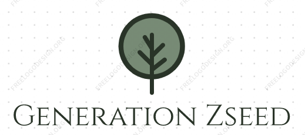

We at Z-Seed present to you the newly-formed technology of Gene-Fixed Seeds. They last longer, perform better under rough circumstances and make sure that the product tastes better than ever before. Join us in exploring this opportunity by subscribing to our newsletter
Our mission
We are the leading producers within gene modified seeds. Our seed can maintain it's health with 60% less water then a average crop seed. As if this was not groundbreaking enough, ourZseeds wil grow twice as fast as other crop seeds. Our goal with this development is to end world hunger, we specialise in helping young and old farmers in Africa. With the time and enrgy saved with the help from our product, we hope that this will result in young children attending school and not attending farming with their parents.
We have helped countries all over africa, in countries such as nigeria, Mali, Cameron and Ghana, we have helped over 200 000 children from working at farms. Now they can attend school.
- Hassan & Yousef